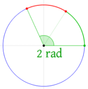
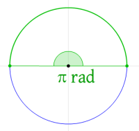
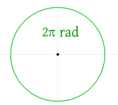

# Aimbot
• https://www.youtube.com/watch?v=sDd8aBCCBbA - How to calculate angle
• https://www.unknowncheats.me/forum/counterstrike-global-offensive/137492-math-hack-1-coding-aimbot-stop-using-calcangle.html#post1146758
Very well explained here:
https://gamehacking.academy/lesson/27
An aimbot is essentially maths.
You calculate the angle between where you're looking and the location of the enemy.
To do this, you use trigonometry.
To find the enemy location,
you subtract the enemy's position from the player's position.
This will give us values that will act as if the player is always at (0, 0)
For an aimbot, you need to find:
• Address of enemy struct in memory
• Address of your player struct in memory
## Radian
A radian is a unit for measuring angles.
It's denoted by the symbol
rad.
Wikipedia has a really good gif
https://en.wikipedia.org/wiki/Radian#/media/File:Circle_radians.gif
{kind=link}
Half a circle is
π rad
A full circle is
2π rad
1 radian is equivalent to
180 / PITo convert a radian to degrees, you do:
radian * (180 / PI)## Euclidian Distance
The Euclidian Distance is the length of a line between two points.

### Calculating Angles - sin, tan, asin, atan, atan2, etc.
• https://www.youtube.com/watch?v=sDd8aBCCBbA - How to calculate angle
• https://guidedhacking.com/threads/ultimate-calcangle-thread-how-to-calculate-angle-functions.8165/
The
sin and tan functions will return the sin and tan values of the angle.However, what we want is the angle itself (so we can aim at the enemy player).
Therefore, you use the inverse versions -
asin and atan,which return the angles in radians.
asin (after converting to degrees) returns a value between -90 and +90.
https://www.cplusplus.com/reference/cmath/asin/?kw=asin
If you're confused:
pi / 2 = 1.57180 / pi = 57.291.57 * 57.29 = 89.94 degrees (with exact Pi values you get 90)If the game's range is +90 (straight down) and -90 (straight up),
then you can instead return
-asin() (e.g. like in CSGO)atan2 (after converting to degrees) returns a value between -180 and +180.
https://www.cplusplus.com/reference/cmath/atan2/?kw=atan2
If you're confused:
pi = 3.14180 / pi = 57.293.14 * 57.29 = 179.89 (with exact Pie values you get 180)If your game's yaw goes from 0 to 360, you could use atan2 and add 180 degrees
after the calculation to get a range from 0 - 360.
## Tips
Start with finding your own player struct
and spin in a circle to verify that you've reversed the struct properly -
player->yaw++You'll want to check if your player ViewAngles are stored in radians or degrees.
If it's degrees, the range will be from 0 to 90 or 180 or 360 or negative versions of these (-90 to +90, etc.)
If it's in radians, a full circle is 2 * PI (6.whatever), so you're looking for 0 - 6 (???)
## Locating Your Own Player
### Console Command
Try using a console command.
For example:
• Assault Cube -
showstats 1 to show data and dbgpos 1 to show XYZ coordinates### Trial and Error
In a memory scanner (e.g. Cheat Engine), search for an unknown value.
Then, move your mouse or player in 1 direction and filter for changes.
Eventually you should be able to find your XYZ coordinates.
## Aimbot Smoothing
???